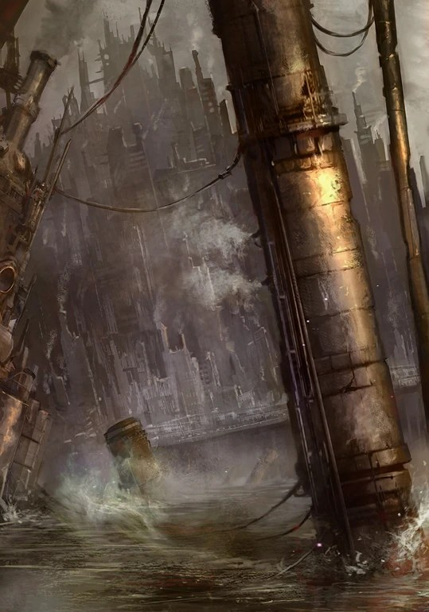
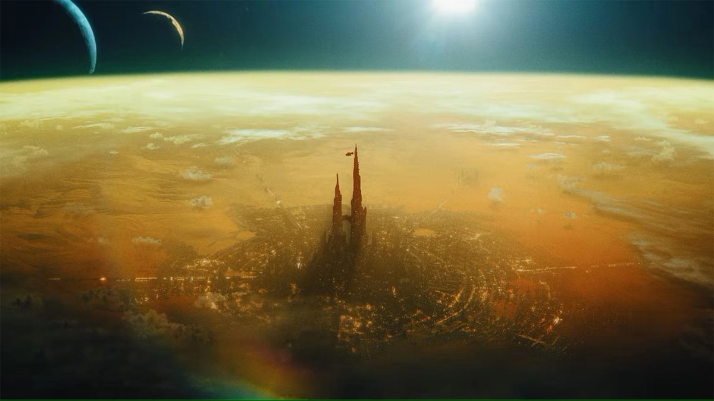
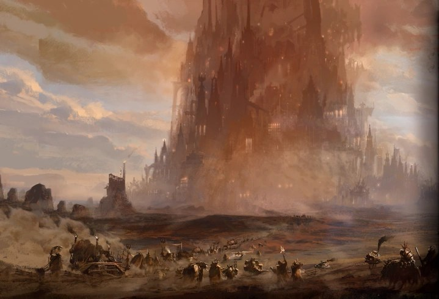

Hive world
| Hive world | |
|---|---|
| Class of Imperial world | |
 A coastal hive city, its lower levels sunk in industrial runoff Artwork © Games Workshop | |
| Administratum class | Hive world[a] |
| Catalogued | About 32,380 worlds, on the rolls of the Administratum |
| Typical tithe | Exactis grades: soldiers, manufactured goods, labour |
| Population | Billions to hundreds of billions; 5 to 20 hives per world, each of 10 to 100 billion |
| Ruler | A hereditary Planetary governor, often with noble houses ruling each hive |
| Dependencies | Agri-worlds for food; Mining worlds for ore |
| Origin | Proto-hives of the Age of Technology (M15–M25, estimated) |
| Examples | Necromunda, Armageddon, Scintilla, Verghast, Vigilus, Terra |
A hive world is the most populous class of planet in the Imperium of Mankind. Its people live almost entirely within enormous city-structures called hives or hive cities, many-layered arcologies that rise kilometres into the sky and descend as far beneath the surface, and each of which may hold tens of billions of souls. The Administratum lists some 32,380 hive worlds, and they provide the greater part of the Imperium's manufactured goods and of the soldiers of the Astra Militarum.[1][2]
Most hive worlds began as habitable planets and have been ruined by constant industry. Outside the hives lie ash wastes and poisoned deserts, and the world depends on Agri-worlds for food. A hive is ruled from its summit by a hereditary governor and the noble houses whose wealth rests on the labour of billions, while the lowest levels, the underhive, are held by gangs, mutants and heretics. The people of the middle hive may never see the sky.[1][3]
The worlds are valued as much for their people as for their factories. A hive city produces soldiers and colonists as surely as steel, and the Administratum draws on hive populations to settle new worlds and to fill the regiments of the Astra Militarum. The Imperium will fight for them at almost any cost, as in the Wars for Armageddon, and the loss of a hive world to rebellion, Genestealer cult or invasion is among the gravest blows the Imperium can suffer.[4][5]
In the Era Indomitus the hive worlds have become both battleground and reservoir. The opening of the Great Rift in 999.M41 isolated many of them in the Imperium Nihilus and exposed others to invasion, while the Imperium's need for troops has made their tithes heavier than ever.[6]
Structure of a hive
[edit]
A hive is built in layers, and its society follows the same order. At the summit is the spire, the home of the governor and the noble houses, where the air is filtered and natural light still falls. Below it lies the hive city proper, a warren of habitation blocks, manufactoria and transit tunnels in which the working population lives and labours, often never seeing the sky. Beneath that lies the underhive, older levels abandoned or collapsed under the weight of the hive above, where outcasts, mutants, gangs and heretics live beyond the reach of the law. At the very bottom is the sump, a lake of toxic waste.[3][2]
Between the hives the surface is commonly an ash waste, a desert of industrial dust, slag and acid rain crossed by armoured convoys and roamed by nomads and raiders. Some hive worlds have a single hive and others dozens, linked by highways, rail and orbital shuttles. Some are wholly built over, covered by hundreds of layers of arcologies. Terra, the Throneworld, is the greatest example of this kind of "super hive world", an ecumenopolis in which the whole of the world's surface is city.[1][3]
Life in a hive
[edit]Class and labour
[edit]Hive cities are old, each growing wider across the barren ground and higher into the polluted air with every century. They are nearly sealed ecosystems, in which billions of people live stacked in a structure that is in essence a great metal tomb. A hive-dweller may live a whole life on the level where he was born and never see the sky or know what the surface of the world is like. Many are born into a house or family with their vocation already settled, and they work at it endlessly in the manufactoria and hab-blocks, producing goods for export or tending the machinery that keeps the hive alive.[1][7]
Almost everything is recycled. The air, the water and the food of a hive-dweller have all passed through other bodies, and when a hive-dweller dies the hive recovers the corpse for its resources, among them corpse starch. Possessions pass down from the dead to the living, so that a room or a coat may have had a dozen owners. The population of a world roughly doubles every hundred years, and a hive city is in effect a factory for the most useful of all resources, people.[1]
The class system follows the geometry of the hive. The nobility holds the spires, the bureaucratic middle class the middle levels and the workers the lower ones, and each level is poorer and more dangerous than the one above. The very bottom is where those without a place are sent, where law fails and gangs rule. Some hold that the underhive is allowed to exist in some form as a sink for the hive's malice and discord.[1][7]
Unrest and calamity
[edit]A hive city is three missed meals from anarchy, and its millions depend on a vast infrastructure for food, power, light and clean air. If unrest is allowed to spread, the threads that hold a hive together can break and millions die. In the Calixis Sector, for example, the Tyburn food-tax riots on Fenksworld doubled the population of the neighbouring Volg hive within a year, and the long misrule of House Koba on Malfi left some billion dead and ruined one of the sector's greatest noble families.[1][8]
Even the greatest hives are not safe. The Reinholt Blackouts of Hive Sibellus, the greatest city of Scintilla, began when the Magistratum cracked down too hard on the city's gangs, and they spread into the hive's infrastructure. Power was cut to several dozen middle-hive districts for days, tens of thousands died, and whole districts burned. Sections of the hive remain as burnt-out ruins that are collapsing into the underhive, and the Magistratum has become more brutal as a result.[1][8]
Tithe and military role
[edit]Hive worlds pay some of the highest tithe grades in the Imperium, in the ''Exactis'' band. They supply manufactured goods, labour for other worlds, ratings for the Imperial Navy and, above all, regiments for the Astra Militarum. It is said that the loss of a million soldiers is worth no more than one day's output of a hive world in arms and armour. Though hive-made goods are far less advanced than the products of a Forge world, they are plentiful, and a hive recruit commonly already knows how to handle a weapon.[1][4]
The soldiers of hive worlds are used to cramped, confused fighting, and hive regiments such as the Necromundan Spiders and the Armageddon Steel Legion are noted for city fighting and mechanised war. A hive world is also a hard place to conquer. Defenders can hold every level and attackers must clear the city floor by floor, which makes fighting for a hive among the costliest kinds of war.[4][5]
The defence of Hades Hive on Armageddon under Commissar Sebastian Yarrick in 941.M41 is the best-known example. In the Third War for Armageddon in 998.M41, Hive Helsreach was held against the Orks of Ghazghkull Thraka by the Black Templars and the hive's own defenders.[5][9]
Notable hive worlds
[edit]
| World | Segmentum | Notes |
|---|---|---|
| Necromunda | Segmentum Solar | The archetypal hive world, ruled by House Helmawr from Hive Primus; its underhive gangs and noble houses are known across the Imperium |
| Armageddon | Segmentum Solar | Hives including Armageddon Prime, Hades, Acheron, Tempestora and Helsreach; attacked by Angron (444.M41) and Ghazghkull Thraka (941 and 998.M41) |
| Scintilla | Segmentum Obscurus | Capital of the Calixis Sector, population about 25 billion, and home of Hive Sibellus |
| Fenksworld | Segmentum Obscurus | Hive world of the Calixis Sector, population about 22 billion; site of the Tyburn food-tax riots |
| Malfi | Segmentum Obscurus | Hive world of the Calixis Sector, population about 23 billion; ruined by the misrule of House Koba |
| Verghast | Segmentum Pacificus | Hive world of the Sabbat Worlds, home of the Vervunhive that was besieged by the Archenemy in the Sabbat Worlds Crusade |
| Vigilus | Segmentum Obscurus | Hive world guarding the Nachmund Gauntlet; besieged by Orks, Genestealer Cults and the Black Legion in the war of 999.M41–c. 001.M42 |
| Ichar IV | Ultima Segmentum | Population recorded at about 500 billion; overrun by a Genestealer Cult and attacked by Hive Fleet Kraken in 992.M41 |
| Minea | Ultima Segmentum | Population about 154 billion |
| Castobel | Ultima Segmentum | Hive world of the Jericho Reach, population estimated at 109 billion |
| Badab Primaris | Ultima Segmentum | Capital of the Badab Sector, population about 5.17 billion |
| Terra | Segmentum Solar | The Throneworld, covered by hive-like palace and city structures |
Society, crime and heresy
[edit]A hive world is ruled by a hereditary governor drawn from the most powerful noble house. The other houses control particular industries or districts and compete for the governor's favour, sometimes with violence. The workers belong to guilds or industrial clans whose loyalties are bound to their employers. Crime, gang war and cult activity are endemic in the lower levels, and the planetary enforcers, assisted by the Adeptus Arbites, keep order only in part.[3][10]
The overcrowded lower levels are fertile ground for heresy. Genestealer Cults in particular spread unnoticed through the underhive for generations, and many hive worlds have been lost to cult uprisings. The Inquisition, and in particular the Ordo Xenos, keeps watch on hive worlds for this reason.[11]
History
[edit]Many hive worlds date from the Dark Age of Technology, when the human worlds were rich and populous, and the first of the proto-hive cities were raised in that age from new building materials as the planets filled. In the Age of Strife some survived by sealing themselves inside their cities, and the hives grew in height and depth as populations rose and surface environments failed.[12][1]
During the Great Crusade (c. 798.M30–005.M31) the hive worlds were prized for their industry and manpower, and their governors were confirmed in power in exchange for the tithe. In the 41st millennium they were the centre of some of the Imperium's largest wars, from the first three wars on Armageddon to the siege of Vigilus.[12][5]
Since the opening of the Great Rift in 999.M41 the hive worlds have been among the main targets of the Imperium's enemies. Many in the Imperium Nihilus have been cut off, some have been lost to uprisings or invasions, and the Departmento Munitorum has demanded levies far above the usual grade to supply the Indomitus Crusade.[6]
Timeline
[edit]| Date | Event |
|---|---|
| M15–M25 (est.) | Most hive worlds settled and industrialised in the Dark Age of Technology[b] |
| M25–M30 | Hive populations are sealed in their cities in the Age of Strife (estimated) |
| c. 798.M30–005.M31 | Hive worlds brought to compliance in the Great Crusade |
| 444.M41 | First War for Armageddon |
| 941.M41 | Second War for Armageddon; defence of Hades Hive |
| 992.M41 | Ichar IV attacked by Hive Fleet Kraken |
| 998.M41 | Third War for Armageddon begins; Hive Helsreach falls under siege |
| 999.M41–c. 001.M42 | War of Vigilus; the Great Rift opens |
See also
[edit]
Notes
[edit]References
[edit]- ^ a b c d e f g h i j Warhammer 40,000: Rogue Trader (1st edition). Games Workshop. pp. 212-213. Dark Heresy: Core Rulebook (roleplaying game). Fantasy Flight Games. p. 249.
- ^ a b Warhammer 40,000 Rulebook (6th edition). Games Workshop. p. 153.
- ^ a b c d White Dwarf 305 (UK). Games Workshop. pp. 64-65.
- ^ a b c Imperial Armour Volume One: Imperial Guard & Imperial Navy. Forge World. pp. 10-12.
- ^ a b c d "Wars for Armageddon". Warhammer 40k Wiki (Fandom).
- ^ a b "Great Rift". Warhammer 40k Wiki (Fandom).
- ^ a b Dark Heresy: Core Rulebook (roleplaying game). Fantasy Flight Games. p. 249. Dark Heresy Second Edition: Core Rulebook (roleplaying game). Fantasy Flight Games. pp. 38-39.
- ^ a b Dark Heresy: Disciples of the Dark Gods (roleplaying game). Fantasy Flight Games. pp. 228-229.
- ^ Dembski-Bowden, Aaron. Helsreach (novel). Black Library.
- ^ "500 Facts for 500 Stores", facts 45 and 46. Warhammer Community, 20 October 2018.
- ^ Dark Heresy: Core Rulebook (roleplaying game). Fantasy Flight Games. pp. 249-250.
- ^ a b Only War: Core Rulebook (roleplaying game). Fantasy Flight Games. pp. 322-323.